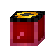
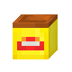
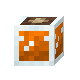
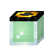
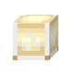
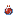
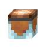
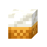
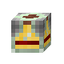
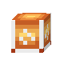

Mixology Table Recipes¶
| Recipe | Output | Inputs | Source |
|---|---|---|---|
ORCHARD_ABSINTHE |
1× ORCHARD_ABSINTHE |  |
 Distillery absent or compatible Mixology integration |
ORCHARD_AMERICANO |
3×  ORCHARD_AMERICANO ORCHARD_AMERICANO |
   or or or 0-1 0-1 |
Distillery absent or wine capability 2 |
ORCHARD_AROMATIC_BITTERS |
1×  ORCHARD_AROMATIC_BITTERS ORCHARD_AROMATIC_BITTERS |
  |
Distillery absent or compatible Mixology integration |
ORCHARD_B52 |
3× ORCHARD_B52 |    |
Distillery absent or compatible Mixology integration; Cafe required |
ORCHARD_BEES_KNEES |
3×  ORCHARD_BEES_KNEES ORCHARD_BEES_KNEES |
   oror0-1 oror0-1 |
Distillery absent or compatible Mixology integration |
ORCHARD_BLACK_RUSSIAN |
3×  ORCHARD_BLACK_RUSSIANDefault Black Russian ORCHARD_BLACK_RUSSIANDefault Black Russian White Russian Mudslide Mudslide |
 or0-1oror0-1 or0-1oror0-1 |
Distillery absent or compatible Mixology integration; Cafe required |
ORCHARD_BLOODY_MARY |
3×  ORCHARD_BLOODY_MARY ORCHARD_BLOODY_MARY |
  oror0-1 oror0-1 |
Distillery absent or compatible Mixology integration |
ORCHARD_CLASSIC_DAIQUIRI |
3×  ORCHARD_CLASSIC_DAIQUIRI ORCHARD_CLASSIC_DAIQUIRI |
 oror0-1 |
Distillery absent or compatible Mixology integration |
ORCHARD_COFFEE_LIQUEUR |
1× ORCHARD_COFFEE_LIQUEUR |  |
Distillery absent or compatible Mixology integration; Cafe required |
ORCHARD_CORPSE_REVIVER_NO_2 |
3×  ORCHARD_CORPSE_REVIVER_NO_2 ORCHARD_CORPSE_REVIVER_NO_2 |
oror |
Distillery absent or wine capability 2 |
ORCHARD_COSMOPOLITAN |
3× ORCHARD_COSMOPOLITAN |  oror0-1 oror0-1 |
Distillery absent or compatible Mixology integration |
ORCHARD_DEATH_IN_THE_AFTERNOON |
3× ORCHARD_DEATH_IN_THE_AFTERNOON | Distillery Sparkling Wine capability 3 required |
|
ORCHARD_DRY_MARTINI |
3× ORCHARD_DRY_MARTINI | oror0-1 |
Distillery absent or wine capability 2 |
ORCHARD_ESPRESSO_MARTINI |
3×  ORCHARD_ESPRESSO_MARTINI ORCHARD_ESPRESSO_MARTINI |
oror0-1 |
Distillery absent or compatible Mixology integration; Cafe required |
ORCHARD_GARIBALDI |
3× ORCHARD_GARIBALDI |  oror0-1 oror0-1 |
Distillery absent or compatible Mixology integration |
ORCHARD_GIN |
1× ORCHARD_GIN | |
Distillery absent or compatible Mixology integration |
ORCHARD_GIN_AND_TONIC |
3×  ORCHARD_GIN_AND_TONIC ORCHARD_GIN_AND_TONIC |
oror0-1 |
Distillery absent or compatible Mixology integration |
ORCHARD_IRISH_CREAM_LIQUEUR |
1× ORCHARD_IRISH_CREAM_LIQUEUR |
  |
Distillery absent or compatible Mixology integration |
ORCHARD_IRISH_CREAM_MILKSHAKE |
3× ORCHARD_IRISH_CREAM_MILKSHAKE |  oror0-1 |
Distillery absent or compatible Mixology integration |
ORCHARD_LONG_ISLAND_ICED_TEA |
3×  ORCHARD_LONG_ISLAND_ICED_TEA ORCHARD_LONG_ISLAND_ICED_TEA |
 oror0-1 |
Distillery absent or compatible Mixology integration |
ORCHARD_MANHATTAN |
3×  ORCHARD_MANHATTAN ORCHARD_MANHATTAN |
oror0-1 |
Distillery absent or wine capability 2 |
ORCHARD_MARGARITA |
3× ORCHARD_MARGARITA | oror0-1 |
Distillery absent or compatible Mixology integration |
ORCHARD_NEGRONI |
3×  ORCHARD_NEGRONIDefault Negroni ORCHARD_NEGRONIDefault Negroni Boulevardier Boulevardier |
ororor0-1 |
Distillery absent or wine capability 2 |
ORCHARD_OLD_FASHIONED |
3×  ORCHARD_OLD_FASHIONEDDefault Old Fashioned ORCHARD_OLD_FASHIONEDDefault Old Fashioned Rum Old Fashioned |
ororor0-1 |
Distillery absent or compatible Mixology integration |
ORCHARD_ORANGE_LIQUEUR |
1× ORCHARD_ORANGE_LIQUEUR | |
Distillery absent or compatible Mixology integration |
ORCHARD_RED_BITTER_APERITIF |
1× ORCHARD_RED_BITTER_APERITIF |
|
Distillery absent or compatible Mixology integration |
ORCHARD_SAZERAC |
3×  ORCHARD_SAZERAC ORCHARD_SAZERAC |
|
Distillery absent or compatible Mixology integration |
ORCHARD_SHAKEN_PINA_COLADA |
3× PINA_COLADA |  oror0-1 oror0-1 |
All Mixology modes; non-alcoholic |
ORCHARD_SPARKLING_LEMONADE |
3×  ORCHARD_SPARKLING_LEMONADEDefault Sparkling Lemonade ORCHARD_SPARKLING_LEMONADEDefault Sparkling Lemonade John Collins John Collins |
0-1oror0-1 |
Virgin: all Mixology modes; spirit variant: Distillery absent or compatible integration |
ORCHARD_SWEET_VERMOUTH |
1× ORCHARD_SWEET_VERMOUTH | |
Distillery absent or wine capability 2 |
ORCHARD_VIRGIN_MANGO_DAIQUIRI |
3×  ORCHARD_VIRGIN_MANGO_DAIQUIRIDefault Virgin Mango Daiquiri ORCHARD_VIRGIN_MANGO_DAIQUIRIDefault Virgin Mango Daiquiri Virgin Banana Daiquiri Virgin Banana Daiquiri |
 ororor0-1 ororor0-1 |
All Mixology modes; non-alcoholic |
ORCHARD_VIRGIN_MOJITO |
3×  ORCHARD_VIRGIN_MOJITODefault Virgin Mojito ORCHARD_VIRGIN_MOJITODefault Virgin Mojito Mojito Mojito |
0-1oror0-1 |
Virgin: all Mixology modes; spirit variant: Distillery absent or compatible integration |
ORCHARD_WHISKEY_SOUR |
3×  ORCHARD_WHISKEY_SOUR ORCHARD_WHISKEY_SOUR |
oror0-1 |
Distillery absent or compatible Mixology integration |
ORCHARD_WHITE_LADY |
3×  ORCHARD_WHITE_LADY ORCHARD_WHITE_LADY |
oror0-1 |
Distillery absent or compatible Mixology integration |